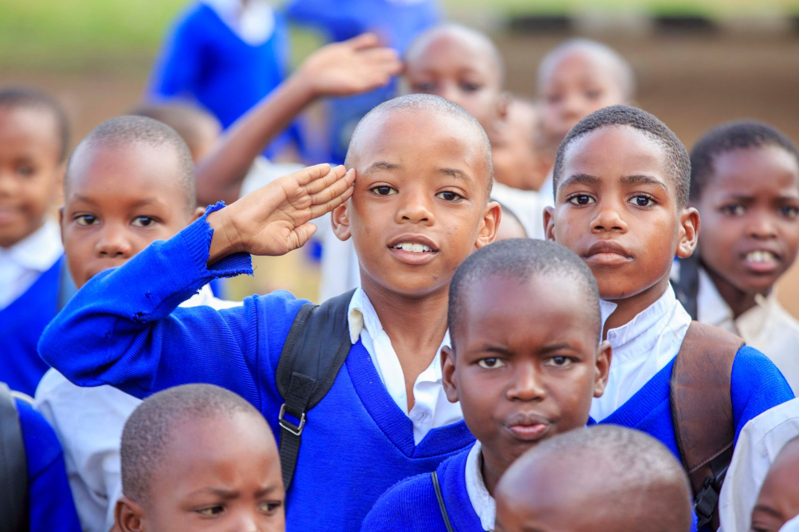

Twenty-seven years of steady, deliberate teaching
Royal Kids Private School was founded on a simple premise: children learn best in a structured environment, taught by teachers who are given the time to know them individually.
Our story
Royal Kids Private School opened its doors in 1998 in a converted house in Klein Windhoek, with eleven pupils and two teachers. The founders, a small group of Windhoek parents and educators, were responding to a specific gap they saw in the city: a need for a primary school small enough that no child could disappear into the back row, yet structured enough to prepare pupils properly for secondary education.
By 2004, the school had outgrown its original site and moved to its current campus in Olympia, where the Main Hall, since extended twice, still hosts our morning assembly every day of term. The move allowed us to add a dedicated library, a science room, and the playing field that now hosts our Friday sport sessions.
Today the school serves just over three hundred pupils from Reception through Grade 7. Many of our current teachers were taught here themselves, which is something we are quietly proud of and which says more about consistency than any prospectus could.
Our philosophy
We do not believe that a primary school needs to choose between academic rigour and a caring environment. The two reinforce each other. A child who feels secure raises their hand to ask a question they do not understand. A child who knows the standard expected of them rises to meet it.
- Every class is capped at eighteen pupils, smaller than the national average for private schools in Windhoek.
- Teachers issue a written progress note each month, not only at the end of term.
- Discipline is handled through clear, consistent consequences explained to the child, never through humiliation.
We are not trying to be the biggest school in Windhoek. We are trying to be the school where a parent never has to wonder how their child is actually doing. Mrs E. Amukwaya, Principal
Our history
The school is founded
Royal Kids opens in Klein Windhoek with eleven pupils across Reception and Grade 1, under founding principal Mrs H. Visser.
Move to the Olympia campus
Growing enrolment prompts a move to the current site, including the construction of the Main Hall and four additional classrooms.
Library and science room added
A dedicated library wing and a science room are completed, alongside the school's first computer laboratory.
Upper Primary expansion
The school extends its programme through to Grade 7, having previously concluded at Grade 4, in response to parent demand.
312 pupils, 28 staff
Royal Kids marks twenty-seven years of continuous operation, with three classes now running at every grade level.
School leadership
The leadership team has an average of fourteen years at Royal Kids, which means decisions about your child are rarely made by someone unfamiliar with how the school actually works day to day.
Mrs E. Amukwaya
Principal
At Royal Kids since 2009. Oversees academic standards and staff development across all three phases.
Mr T. Nangolo
Deputy Principal, Academics
Leads curriculum planning and manages assessment and reporting across Grades 1 to 7.
Mrs S. Kandjala
Head of Pre-Primary
Responsible for Reception and Grade 0, including school-readiness assessment for new admissions.
Meet the team in person
Campus tours run every Tuesday and Thursday morning and include time with the relevant grade teacher.